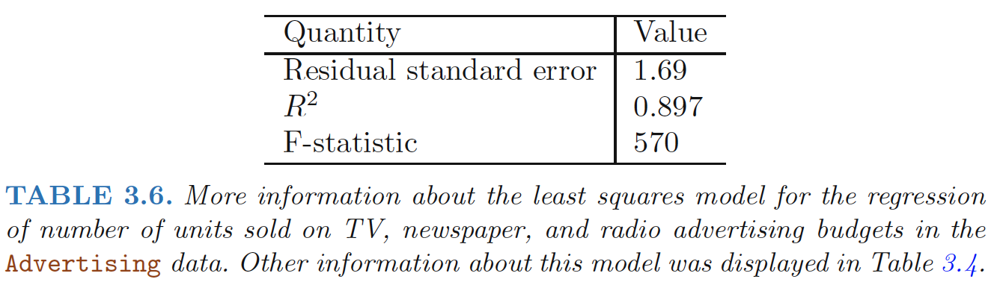

multiple linear regression model takes the form:
\[\begin{align} Y=\beta_0+\beta_1X_1+,,,+\beta_pX_p+\epsilon \end{align}\]
Estimating the Regression Coefficients
We choose β0, β1, . . . , βp to minimize the sum of squared residuals
\[\begin{align} RSS&=\sum_{i=1}^n(y_i-\hat{y}_i)^2 \\ &=\sum_{i=1}^n(y_i-\hat{\beta_0}-\hat{\beta_1}x_{i1}-,,,-\hat{\beta_p}x_{ip})^2 \end{align}\]
Does it make sense for the multiple regression to suggest no relationship between sales and newspaper while the simple linear regression implies the opposite?
- Notice that the correlation between radio and newspaper is 0.35.
- In markets where we spend more on radio our sales will tend to be higher, and as our correlation matrix shows, we also tend to spend more on newspaper advertising in those same markets.
- Hence, in a simple linear regression which only examines sales versus newspaper, we will observe that higher values of newspaper tend to be associated with higher values of sales, even though newspaper advertising does not actually affect sales.
Some Important Questions
Is There a Relationship Between the Response and Predictors?
Hypothesis Test
We use a hypothesis test to answer this question.
We test the null hypothesis
1 | H_0 : β1 = β2 = · · · = βp = 0 |
versus the alternative 1
H_a : at least one βj is non-zero
This hypothesis test is performed by computing the F-statistic,
\[\begin{align} F=\frac{(TSS-RSS)/p}{RSS/(n-p-1)} \end{align}\]
where \(TSS =(y_i − \bar{y})^2\) and \(RSS =(y_i−\hat{y}_i)^2\).
If the linear model assumptions are correct, one can show that
\[\begin{align} E[RSS/(n-p-1)]=\sigma^2 \end{align}\]
and that, provided H0 is true,
\[\begin{align} E[(TSS-RSS)/p]=\sigma^2 \end{align}\]
When there is no relationship between the response and predictors, one would expect the F-statistic to take on a value close to 1.
On the other hand, if H_a is true, then \(E[(TSS-RSS)/p]>\sigma^2\), so we expect F to be greater than 1.

How large does the F-statistic need to be before we can reject H0 and conclude that there is a relationship?
- When n is large, an F-statistic that is just a little larger than 1 might still provide evidence against H_0.
- In contrast, a larger F-statistic is needed to reject H_0 if n is small.
- For the advertising data, the p-value associated with the F-statistic in Table 3.6 is essentially zero, so we have extremely strong evidence that at least one of the media is associated with increased sales.
To test that a particular subset of q of the coefficients are zero
This corresponds to a null hypothesis
1 | H_0 : β(p-q+1) = β(p-q+2) = · · · = βp = 0 |
In this case we fit a second model that uses all the variables except those last q. Suppose that the residual sum of squares for that model is RSS_0. Then the appropriate F-statistic is
\[\begin{align} F=\frac{(RSS_0-RSS)/q}{RSS/(n-p-1)} \end{align}\]
F-statistics v.s. t-statistics
- Equivalency: In Table 3.4, for each individual predictor a t-statistic and a p-value were reported. These provide information about whether each individual predictor is related to the response, after adjusting for the other predictors. It turns out that each of these are exactly equivalent to the F-test that omits that single variable from the model, leaving all the others in—i.e. q=1 in the model. So it reports the partial effect of adding that variable to the model.
The square of each t-statistic is the corresponding F-statistic.
- p is large: If any one of the p-values for the individual variables is very small, then at least one of the predictors is related to the response. However, this logic is flawed, especially when the number of predictors p is large.
- If we use the individual t-statistics and associated p-values to decide whether there is any association between the variables and the response, high chance we will incorrectly conclude there is a relationship.
However, the F-statistic does not suffer from this problem because it adjusts for the number of predictors.
- p > n: more coefficients βj to estimate than observations from which to estimate them.
cannot even fit the multiple linear regression model using least squares,
Do all the predictors help to explain Y , or is only a subset of the predictors useful?
Variable Selection
- Various statistics can be used to judge the quality of a model:
- Mallow’s Cp, Akaike informa- Mallow’s Cp tion criterion (AIC)
- Bayesian information criterion (BIC)
adjusted R2
- There are three classical approaches to select models:
- Forward selection
- Backward selection
Mixed selection
How well does the model fit the data?
Two of the most common numerical measures of model fit are the RSE and R2
R2 Statistics
An \(R^2\) value close to 1 indicates that the model explains a large portion of the variance in the response variable. \[\begin{align} R2 = (TSS − RSS)/TSS= 1− RSS/TSS \end{align}\]
Recall that in simple regression, R2 is the square of the correlation of the response and the variable. In multiple linear regression, it turns out that it equals \(Cor(Y, \hat{Y} )^2\), the square of the correlation between the response and the fitted linear model; in fact one property of the fitted linear model is that it maximizes this correlation among all possible linear models.
R2 will always increase when more variables are added to the model, even if those variables are only weakly associated with the response. - This is due to the fact that adding another variable to the least squares equations must allow us to fit the training data (though not necessarily the testing data) more accurately. - The fact that adding newspaper advertising to the model containing only TV and radio advertising leads to just a tiny increase in R2 provides additional evidence that newspaper can be dropped from the model.
RSE
RSE is defined as
\[\begin{align} RSE=\sqrt{\frac{RSS}{n-p-1}} \end{align}\]
Models with more variables can have higher RSE if the decrease in RSS is small relative to the increase in p.
Graphical summaries
It suggests a synergy or interaction effect between the advertising media, whereby combining the media together results in a bigger boost to sales than using any single medium
Given a set of predictor values, what response value should we predict, and how accurate is our prediction?
Uncertainty associated with prediction
- The coefficient estimates \(\hat{\beta_0},\hat{\beta_1},...,\hat{\beta_p}\) are estimates for \(β_0, β_1, . . . , β_p\). That is, the least squares plane \[\begin{align} \hat{Y}=\hat{\beta_0}+\hat{\beta_1}X_1+,...+\hat{\beta_p}X_p \end{align}\] is only an estimate for the true population regression plane \[\begin{align} f(X)=\beta_0+\beta_1X_1+,...+\beta_pX_p \end{align}\]
The inaccuracy in the coefficient estimates is related to the reducible error.
We can compute a confidence interval in order to determine how close \(\hat{Y}\) will be to f(X).
In practice assuming a linear model for f(X) is almost always an approximation of reality, so there is an additional source of potentially reducible error which we call model bias.
- Even if we knew f(X)—true values for β0, β1, . . . , βp—the response value cannot be predicted perfectly because of the random error \(\epsilon\) --irreducible error.
- How much will Y vary from \(\hat{Y}\)? -- prediction intervals
Prediction intervals
Prediction intervals are always wider than confidence intervals - Because they incorporate both the error in the estimate for f(X) (the reducible error) and the uncertainty as to how much an individual point will differ from the population regression plane (the irreducible error).
E.g. - confidence interval : quantify the uncertainty surrounding the average sales over a large number of cities. - prediction interval : quantify the uncertainty surrounding sales for a particular city.